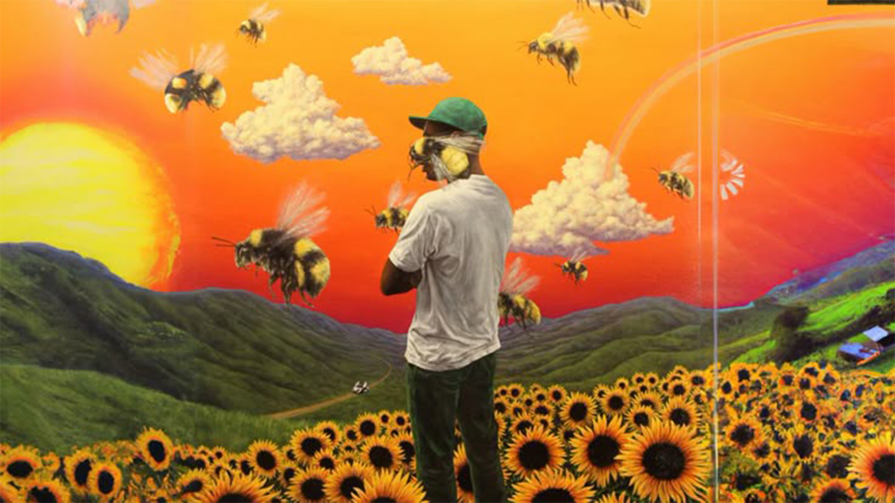

Can I get
A Kiss ?

L'Intention
Traduire visuellement la nostalgie saturée de l'album Flower Boy.
L'objectif était de créer une typographie cinétique qui ne se contente pas de suivre les paroles,
mais qui danse avec la rythmique syncopée de la batterie.
J'ai voulu capturer cette dualité propre à l'artiste : un mélange de douceur mélodique (les cordes, le piano)
et d'énergie brute, le tout baigné dans une esthétique solaire et granuleuse.
Direction Artistique
Pour respecter l'univers visuel de l'album, j'ai travaillé sur une palette chromatique
très saturée : l'orange brûlé du ciel, le jaune des tournesols et le vert profond.
Le traitement de l'image inclut un fort grain argentique superposé à l'animation
numérique pour casser l'aspect trop "propre" du vectoriel et donner une sensation de souvenir d'été.

.jpg)
Le Défi Technique
La principale difficulté résidait dans la synchronisation labiale (lip-sync) des éléments graphiques. J'ai utilisé des expressions After Effects pour automatiser certains rebonds (bounce) en fonction des fréquences basses de la piste audio, permettant une réactivité organique que les images clés manuelles peinent parfois à reproduire.